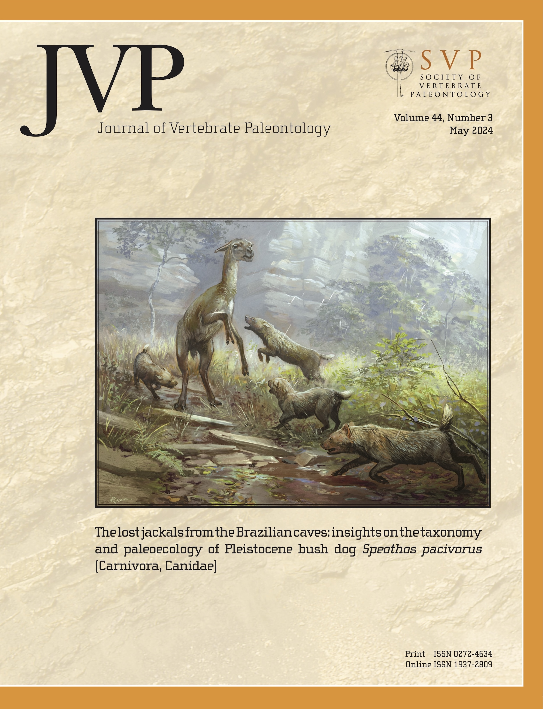
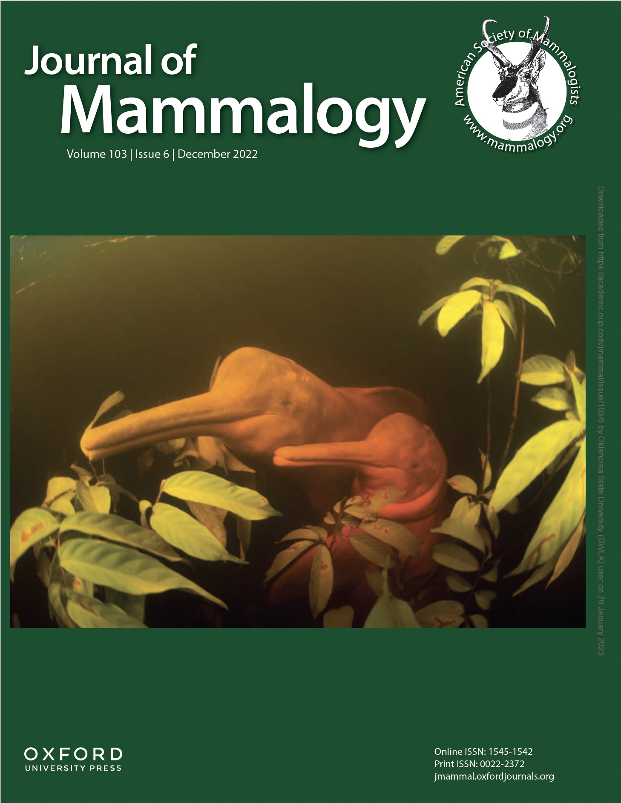
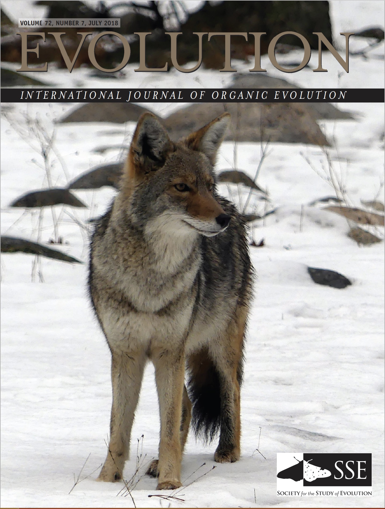
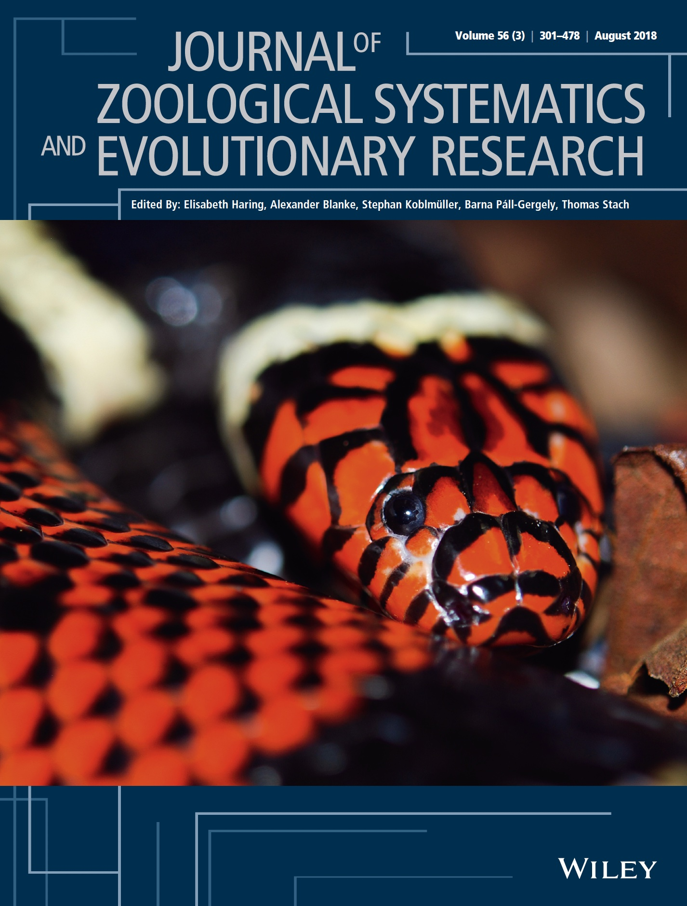

A full list of PDFs can be found on GitHub and ResearchGate. * Equal contribution.
Preprints
Ely RC, Machado FA. A novel phylogenetic comparative model reveals strong signals for early high disparity in ichthyosaurs. bioRxiv.
Penna A*, Melo D, Martin BS, Simone MN, Rossoni DM, Costa BA, Garcia G, de Oliveira FB, Marroig G, Machado FA*. Conserved covariance structure underlies 60 million years of morphological diversification in Primates. bioRxiv. bioRxiv
Joseph L, Joseph DM, Colon-Rivera N, Machado FA, McCullagh E. Sociality Drives Sex Differences in Auditory Brainstem Processing Across Rodent Species. bioRxiv 2026.06.09.731227.
2026
Machado FA, Penna A, Melo D, Costa BA, Zahn TMG, Pavan AC, Porto A, Sebastião H, Rossoni DM, Marroig G, Hubbe A. Invasion of new adaptive zones retains telltale signs of directional selection at macroevolutionary scales in mammals. Evolution Letters qrag039. doi: 10.1093/evlett/qrag039
Joseph L, Machado FA, McCullagh E. Sociality Predicts Enhanced Auditory Thresholds and Binaural Hearing Processing Across Rodent Species. Communications Biology (accepted).
Maianne M, Barro-Souza Y, Machado FA, Borges LM. When morphology stands still: constrained floral evolution in a mega diverse legume genus. Annals of Botany mcag147. doi: 10.1093/aob/mcag147
Liu M, Han ZY, Yuan Y, DeWitt K, Wieczynski DJ, Yammine KM, Yammine A, Zufall R, Siepielski A, Chalker D, Onishi M, Machado FA, Gibert JP. Heritable variation drives rapid evolution of thermal performance curves in the protist Tetrahymena thermophila. Communications Biology 9:994. doi: 10.1038/s42003-026-09980-6
2025
Edwards OM, Bachman N, Banks K, Zhang B, Machado FA, Reichert M. Genomic and morphological evidence support contemporary three-way interspecific hybridization in ranid frogs. Ecology and Evolution. doi: 10.1002/ece3.72035
Uyeda JC, Machado FA. Quantitative Genetics of Evolutionary Divergence and Diversification. In: Reference Module in Life Science. Elsevier. doi: 10.1016/B978-0-443-15750-9.00141-5
Sergott CE, Rodman K, Greene NT, Li B, Joseph L, Machado FA, Alarcon GA, McCullagh EA. Variation in head and pinna morphology of preserved Peromyscus spp. specimens and implications for auditory function. Journal of Anatomy. doi: 10.1111/joa.70011
Viranta S, Werhahn G, Machado FA. Morphometric evidence for the differentiation of the Himalayan wolf Canis lupus chanco (Canidae; Carnivora). Mammal Research 70:195–203. doi: 10.1007/s13364-025-00793-2
Ruiz JV, Kyriakouli C, Hansen K, Gundlach C, Ferreira GS, Machado FA, Godoy PL, Castro MC, Montefeltro FC. The lost jackals from the Brazilian caves: insights on the taxonomy and paleoecology of Pleistocene bush dog Speothos pacivorus (Carnivora, Canidae). Journal of Vertebrate Paleontology e2438827. doi: 10.1080/02724634.2024.2438827 [Journal cover]

2024
Gomes AA, Sidlauskas B, Machado FA, Caires RA, Melo MRS. Evolution of the body-shape in dragonfishes and their allies (Teleostei: Stomiiformes). Journal of the Ichthyologists and Herpetologists 112(3):473–488. doi: 10.1643/i2023068
Ruiz JV, Kyriakouli C, Hansen K, Gundlach C, Ferreira GS, Machado FA, Godoy PL, Castro MC, Montefeltro FC. The Fossils of Speothos pacivorus (Carnivora: Canidae) at the Peter Lund/Quaternary Collection of the Natural History Museum of Denmark. MorphoMuseuM 10(2):e229. doi: 10.18563/journal.m3.229
2023
Machado FA, Mongle CS, Slater G, Penna A, Wisniewski A, Soffin A, Dutra V, Uyeda JC. Rules of teeth development align microevolution with macroevolution in extant and extinct primates. Nature Ecology and Evolution 7:1729–1739. doi: 10.1038/s41559-023-02167-w
Iglesias PP*, Machado FA*, Llanes S, Hasson E, Soto EM. Opportunities and Constraints Imposed by the G matrix of Drosophila buzzatii Wings. Evolutionary Biology 50:127–136. doi: 10.1007/s11692-022-09593-x
Hubbe A, Machado FA, Melo D, Garcia G, Sebastião H, Porto A, Cheverud J, Marroig G. Morphological integration during postnatal ontogeny: implications for evolutionary biology. Evolution 77(3):763–775. doi: 10.1093/evolut/qpac052
Miranda F, Casali D, Garbino G, Machado FA, Perini F. Taxonomic revision of maned sloths Bradypus (Scaeopus) (Pilosa, Bradypodidae) with revalidation of B. crinitus. Journal of Mammalogy 104(1):86–103. doi: 10.1093/jmammal/gyac059
2022
Machado FA, Marroig G, Hubbe A. The preeminent role of directional selection in generating extreme morphological change in Glyptodonts (Cingulata; Xenarthra). Proceedings of the Royal Society of London. Series B, Biological Sciences 289:20212521. doi: 10.1098/rspb.2021.2521
Mongle CS, Machado FA, Nesbitt A, Smaers JB, Turner AH, Grine FE, Uyeda JC. Developmental processes mediate alignment between the micro- and macroevolution of primate molars. Evolution 76(12):2975–2985. doi: 10.1111/evo.14600
Emin-Lima R, Machado FA, Siciliano S, Gravena W, Aliaga-Rossel E, Silva Junior JS, Hingst-Zaher E, de Oliveira LR. Morphological disparity in the skull of Amazon River dolphins of the genus Inia (Cetacea, Iniidae) is inconsistent with a single taxon. Journal of Mammalogy 103(6):1278–1289. doi: 10.1093/jmammal/gyac039
Hubbe A, Machado FA. Comments on: “Estimating the body mass of the Late Pleistocene megafauna from the South America Intertropical Region and a new regression to estimate the body mass of extinct xenarthrans”. Journal of South American Earth Sciences 119:103994. doi: 10.1016/j.jsames.2022.103994

2021
Segura V, Cassini GH, Prevosti FJ, Machado FA. Integration or modularity in the mandible of canids (Carnivora: Canidae): A geometric morphometric approach. Journal of Mammalian Evolution 28:145–157. doi: 10.1007/s10914-020-09502-z
2020
Machado FA. Selection and constraints in the ecomorphological adaptive evolution of the skull of extant Canidae. The American Naturalist 192(2):197–215. doi: 10.1086/709610
Machado FA, Teta P. Morphometric analysis of skull shape reveals unprecedented diversity of African Canidae. Journal of Mammalogy 101(2):349–360. doi: 10.1093/jmammal/gyz214
Kitchener AC, Machado FA, Hayssen V, Moehlman PD, Viranta S. Consequences of the mis-identification of museum specimens: The taxonomic status of Canis lupaster soudanicus. Journal of Mammalogy 101(4):1148–1150. doi: 10.1093/jmammal/gyaa080
2019
Machado FA, Hubbe A, Melo D, Porto A, Marroig G. Comparing the magnitude of morphological integration: the effect of differences in morphometric representations and the inclusion of size. Evolution 73(12):2518–2528. doi: 10.1111/evo.13864
2018
Machado FA, Zahn TMG, Marroig G. Evolution of morphological integration in the skull of Carnivora (Mammalia): Changes in Canidae lead to increased evolutionary potential of facial traits. Evolution 72(7):1399–1419. doi: 10.1111/evo.13495 [Journal cover]
Zaher H, Yánez-Muñoz MH, Rodrigues MT, Graboski R, Machado FA, Altamirano-Benavides M, Bonatto SL, Grazziotin FG. Origin and hidden diversity within the poorly known Galápagos snake radiation (Serpentes: Dipsadidae). Systematics and Biodiversity 53:614–642. doi: 10.1080/14772000.2018.1478910

2017
Silva FMD, de Oliveira LS, de Souza Nascimento LR, Machado FA, Prudente ALDC. Sexual dimorphism and ontogenetic changes of Amazonian pit vipers (Bothrops atrox). Zoologischer Anzeiger - a Journal of Comparative Zoology 271:15–24. doi: 10.1016/j.jcz.2017.11.001
Santos MMD, Silva FMD, Hingst-Zaher E, Machado FA, Zaher H, Prudente ALDC. Cranial adaptations for feeding on snails in species of Sibynomorphus (Dipsadidae: Dipsadinae). Zoology-Jena 120:24–30. doi: 10.1016/j.zool.2016.09.003
Miranda FR, Casali DM, Perini FA, Machado FA, Santos FR. Taxonomic review of the genus Cyclopes Gray, 1821 (Xenarthra: Pilosa), with the revalidation and description of new species. Zoological Journal of the Linnean Society 183(3):687–721. doi: 10.1093/zoolinnean/zlx079
Silva FMD, Prudente ALDC, Machado FA, Santos MM, Zaher H, & Hingst-Zaher E. Aquatic adaptations in a Neotropical coral snake: A study of morphological convergence. Journal of Zoological Systematics and Evolutionary Research 4(4):393–13. doi: 10.1111/jzs.12202 [Journal cover]

2016
Simon MN, Machado FA, Marroig G. High evolutionary constraints limited adaptive responses to past climate changes in toad skulls. Proceedings of the Royal Society of London. Series B, Biological Sciences 283(1841):20161783. doi: 10.1098/rspb.2016.1783
Carvalho ALG, Sena MA, Peloso PLV, Machado FA, Montesinos R, Silva HR, Campbell G, Rodrigues MT. A New Tropidurus (Tropiduridae) from the semiarid Brazilian Caatinga: evidence for conflicting signal between mitochondrial and nuclear loci affecting the phylogenetic reconstruction of South American collared lizards. American Museum Novitates 3852(3852):1–68. doi: 10.1206/3852.1
2012
Sydney NV*, Machado FA*, Hingst-Zaher E. Timing of ontogenetic changes of two cranial regions in Sotalia guianensis (Delphinidae). Mammalian Biology - Zeitschrift Fur Saugetierkunde 77(6):397–403. doi: 10.1016/j.mambio.2012.04.007
Bernardo PH, Machado FA, Murphy RW, Zaher H. Redescription and morphological variation of Oxyrhopus clathratus Duméril, Bibron and Duméril 1854 (Serpentes: Dipsadidae: Xenodontinae). South American Journal of Herpetology 7(2):134–148. doi: 10.2994/057.007.0203
Fausto S, Machado FA, Bento LFJ, Iamarino A, Nahas TR, Munger DS. Research Blogging: Indexing and Registering the Change in Science 2.0. Plos One 7(12):e50109. doi: 10.1371/journal.pone.0050109
Molina FB, Machado FA, Zaher H. Taxonomic validity of Mesoclemmys heliostemma (McCord, Joseph-Ouni & Lamar, 2001) (Testudines, Chelidae) inferred from morphological analysis. Zootaxa 3575:63–77. doi: 10.11646/zootaxa.3575.1.4
2011
Kawamoto TH, Machado FA, Kaneto GE, Japyassú HF. Resting metabolic rates of two orbweb spiders: a first approach to evolutionary success of ecribellate spiders. Journal of Insect Physiology 57(3):427–432. doi: 10.1016/j.jinsphys.2011.01.001
2010
Machado FA, Zaher H. Pitfalls of artificial grouping and stratification of scientific journals based on their Impact Factor: a case study in Brazilian Zoology. Zoologia (Curitiba, Impresso) 27:493–502. doi: 10.1590/S1984-46702010000400002
Japyassú H, Machado FA. Coding behavioural data for cladistic analysis: using dynamic homology without parsimony. Cladistics 26:625–642. doi: 10.1111/j.1096-0031.2010.00309.x
Klaczko J, Machado FA, Scrocchi G, Zaher H. Taxonomic Status of Chironius multiventris and Chironius cochranae (Serpentes). Herpetologica 66(4):476–484. doi: 10.1655/HERPETOLOGICA-D-09-00012.1
2009
Machado FA, & Hingst-Zaher E. Investigating South American biogeographic history using patterns of skull shape variation on Cerdocyon thous (Mammalia: Canidae). Biological Journal of the Linnean Society 98(1):77–84. doi: 10.1111/j.1095-8312.2009.01274.x
No publications match your search. Try a different title, author, journal, or year.